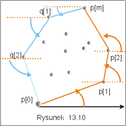
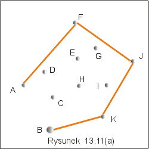

| « poprzedni punkt | nastêpny punkt » |
Zauwa¿my jeszcze, ¿e je¶li pocz±tek
uk³adu wspó³rzêdnych umie¶cimy w punkcie p, wybranym zgodnie z opisan±
zasad±, to nastêpny "wykryty" metod± obracania kartki papieru, punkt,
to ten punkt q zbioru Q, dla którego k±t jaki tworzy wektor pq z dodatnim kierunkiem
osi X jest najmniejszy, tzn. dla którego k±t biegunowy ze wzglêdu
na p jest najmniejszy licz±c od dodatniej pó³osi OX. Je¶li
jednak osi±gniemy punkt po³o¿ony najwy¿ej w zbiorze Q, to nastêpny
wybrany punkt to ten o najmniejszej wspó³rzêdnej k±towej w biegunowym
uk³adzie wspó³rzêdnych, licz±c od ujemnej pó³osi OX.
Na rysunku 13.10 zaznaczono wybrane punkty i k±ty, które badamy. Punkt p[1] jest nastêpnym wybranym po punkcie p[0], bo k±t jaki tworzy dodatni kierunek osi OX z wektorem p[0]p[1] jest najmniejszy (kartkê obracamy w lewo). Podobnie dla punktów p[2] i p[m]. Punkt p[m] jest najwy¿ej po³o¿onym punktem. Umie¶æmy pocz±tek uk³adu w tym punkcie i przy³ó¿my kartkê w punkcie q[0]=p[m], tak, by jej brzeg pokrywa³ siê z ujemnym kierunkiem osi OX. Obracamy kartkê w dó³ w prawo. Znaleziony punkt q[1] tworzy najmniejszy k±t biegunowy z ujemn± pó³osi± OX.
|  |
W algorytmie Jarvisa, podobnie jak w algorytmie
Grahama, nie musimy liczyæ k±tów. Wystarczy umieæ je porównywaæ. Zgodnie z
tym co by³o powiedziane w punkcie drugim tego wyk³adu, wymaga to obliczenia
iloczynu wektorowego, a dok³adniej zbadania
znaku pewnego wyznacznika.
Szkic algorytmu Jarvisa
Krok 1. Znale¼æ punkty p[0], q[0] : p[0] o najmniejszej, a
q[0] o najwiêkszej
wspó³rzêdnej y:
p[0].y = min {p.y : p Î Q}; q[0].y =
max{p.y : p Î Q}.
Krok 2. Konstruujemy dwa ci±gi
- lewy ci±g :
p[0],..., p[m] i
- prawy ci±g :q[0],...
,q[l],
takie ¿e p[m] =q[0], q[l] = p[0] oraz
p[i+1] jest tym punktem zbioru Q, który ma najmniejszy k±t biegunowy ze
wzglêdu na p[i], licz±c od dodatniej pó³osi OX w lewo,
q[i+1] jest tym punktem zbioru Q, który ma najmniejszy k±t biegunowy ze
wzglêdu na p[i], licz±c od ujemnej pó³osi OX w prawo.
Zbiór punktów p[0],...,p[m], q[1],...., q[l-1] jest ci±giem
wierzcho³ków otoczki wypuk³ej w porz±dku ich wystêpowania na
obwodzie wielok±ta, w kierunku przeciwnym do ruchu wskazówek zegara.
Koszt algorytmu Jarvisa
Niech k bêdzie liczb± wierzcho³ków szukanej otoczki wypuk³ej zbioru n punktów Q. Ka¿dy krok pêtli znajduj±cej kolejne punkty ci±gu lewego i prawego kosztuje O(n) (szukamy minimum k±ta biegunowego w n elementowym zbiorze). Zatem ostatecznie koszt ocenimy na O(nk).
Przyk³ad
5.1
Rozwa¿my zbiór punktów przedstawiony na rysunku 13.11(a). W
tabeli obok zaznaczono kolorem czerwonym punkty wybrane w kolejnych
krokach algorytmu (dla których k±t biegunowy by³ aktualnie
najmniejszy). Punktem pocz±tkowym jest B, gdy¿ jego wspó³rzêdna y
ma najmniejsz± warto¶æ. Wybrane punkty s± wstawiane na kolejne
pocz±tkowe pozycje tablicy punktów podobnie, jak to siê dzieje w
algorytmie SelectionSort. Je¶li znaleziony punkt jest identyczny z
punktem pocz±tkowym, to proces tworzenia otoczki jest zakoñczony.
|
 |
|
||||||||||||||||||||||||||||||||||||||||||||||||||||||||||||||||||||||||||||||||||||||||||||||||
Uwaga Eddy i Floyd zaproponowali, by proces konstrukcji otoczki wypuk³ej (dowolnym algorytmem) zawsze rozpoczynaæ od usuniêcia wszystkich punktów le¿±cych wewn±trz czworok±ta zbudowanego z punktów ekstremalnych: p1- o najmniejszej wspó³rzêdnej x, p2 - o najmniejszej wspó³rzêdnej y, p3 - o najwiêkszej wspó³rzêdnej x i p4 - o najwiêkszej wspó³rzêdnej y. Jest do¶æ du¿a szansa, ¿e w tym pierwszym kroku usuniemy z dalszych rozwa¿añ znaczn± liczbê niepotrzebnych punktów.
Pytanie 5: Jaki jest w najgorszym przypadku koszt algorytmu Jarvisa
zastosowanego do zbioru n punktów ?
| « poprzedni punkt | nastêpny punkt » |